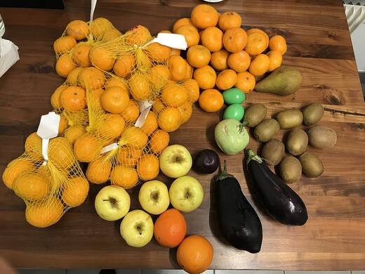
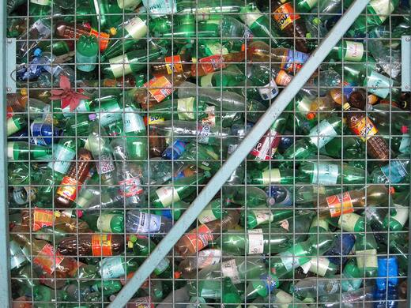
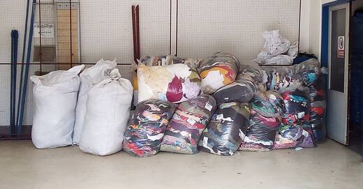

Guess the number
How much food that was still good to eat did Malaysians throw away every day in 2025?
Pick a topic

Food Waste
Why good food ends up in the bin, and how to rescue your leftovers.
Plastic Waste
Count the single-use plastic you use in a day, and find a swap for each one.

Recycling
Learn which bin is which, then play the sorting game.

Textile Waste
Find out what happens to old clothes, and what to do with yours.
Photo credits are on each topic's tab.
My pledges
You haven't picked any habits yet. Every topic tab has tips you can pledge to try.
The facts
-
In 2025, Malaysians threw away about 6,000 tonnes of food that was still good to eat every day. In 2024 it was about 5,000 tonnes a day.
Source: New Straits Times, June 2026
-
Each Malaysian wastes about 81 kg of food a year. The world average is 79 kg.
Source: The Star, July 2026, reporting the UNEP Food Waste Index Report 2024
-
During Ramadan 2023, an extra 75,000 tonnes of food waste was expected, much of it from bazaars and buffets.
Source: New Straits Times, March 2023
-
Around the world, 1.05 billion tonnes of food was wasted in 2022, and 60% of it came from homes.
Leftover rescue
Tick what's left in your fridge, and we'll suggest something to cook with it instead of throwing it away.
What you can do
- Take only what you can finish at buffets.
- Check your fridge before buying more food.
- Eat leftovers the next day, or turn them into a new meal.
- Share extra food with family, friends or neighbours.
The facts
-
Each Malaysian uses about 16.78 kg of plastic packaging a year. That was the highest of the six Asian countries in a WWF study.
Source: Malay Mail, September 2020, reporting WWF-Malaysia
-
The same report found that buying takeaway food and drinks is a major cause of Malaysia's plastic waste.
Source: Malay Mail, September 2020
-
Since 1 January 2017, shops in Selangor have charged 20 sen for each plastic bag.
Source: Free Malaysia Today, July 2017
-
But in 2023, many people were still paying for plastic bags instead of bringing their own.
Source: The Star, June 2023
-
Malaysia's Roadmap Towards Zero Single-Use Plastics aims to stop single-use plastics by 2030.
My plastic day
Tap every single-use plastic item you used today.
You haven't picked anything yet.
The 20 sen calculator
What you can do
- Carry a reusable shopping bag.
- Say "no straw, please" when you order a drink.
- Bring your own water bottle to school.
- Bring a container when you buy takeaway food.
The facts
Malaysia's recycling rate is going up, but it still hasn't reached the 40% target.
Sources: Malay Mail, December 2023 (2015 and 2023), Malay Mail, December 2021 (2021), New Straits Times, August 2024 (target)
-
Not recycling cost Malaysia about RM291 million in 2023 alone.
Source: Malay Mail, December 2023
-
Malaysia's recycling bins come in three colours: blue for paper, brown for glass, and orange for plastic and tins. Dirty paper and tissue paper don't go in the blue bin.
Source: Ipoh Echo, June 2021
Sorting game
Which bin does it go in? Sort 10 everyday things.
Newspaper
What you can do
- Rinse bottles and cans before you recycle them.
- Keep paper clean and dry so it can be recycled.
- Keep a box at home for things you can recycle.
- Find the recycling bins near your home or school.
The facts
-
The social enterprise Kloth Cares says Malaysians throw away more than 2,000 tonnes of textile waste every day.
Source: Malay Mail, November 2019
-
A UiTM article gives a smaller number: 195,300 tonnes a year, which is about 535 tonnes a day. Sources don't always agree, so it's good to check more than one.
Source: UiTM Institutional Repository
-
Around the world, about one rubbish truck of textiles is burned or sent to landfill every second.
Source: Ellen MacArthur Foundation, A New Textiles Economy (2017)
-
Less than 1% of the material used to make clothes is recycled into new clothes.
Source: Ellen MacArthur Foundation, A New Textiles Economy (2017)
-
Making one cotton T-shirt can take about 2,700 litres of water. That's enough for one person to drink for 2.5 years.
Old clothes helper
Got a piece of clothing you don't want? Answer a few questions to find out what to do with it.
Do you still wear it?
T-shirt water calculator
What you can do
- Buy fewer clothes, and choose ones that last.
- Swap clothes with friends or family.
- Fix small holes and loose buttons instead of throwing clothes away.
- Donate clothes that still fit someone else.